前々から、ノイズキャンセリング機能がついたイヤホンが欲しいと思っていた。TV CMを観て、SONYウォークマンのものがいいと感じていた。しかし欲しいのはSONYのイヤホンのみであって、ウォークマン本体はいらない。運よくイヤホンのみが売られていたのを店頭で発見したので、早速購入する。実際には、かなり前から店頭に並んでいたのかもしれないが。池袋のビックカメラで、MDR-NC22が7,980円。同日に、SKYTECHのミドルタワーケースSKC450-12Wも購入する。本当はOWLTECHのOWL-612-SLT/Nが欲しかったのだが、発売日が一ヶ月以上も先の2007/05/21ということで断念。そんな先まで待てません……と書きつつ、ほとんどゴールデンウィークは仕事で埋まりそうなヤバイ気配ががが。
PC(Cathy)の不調は相変わらず続く。とにかく使いものにならない。とゆーわけで別に一式、新しく組み立てることにする。まず、ツクモケース王国でPCケースをチェック。なんかいいケースがあれば……と思ったのだが、特に惹かれるものなく撤収。いくつか店舗を見てまわり、TSUKUMO eX.にする。ここのよいところは、パーツ複数を購入する際に実物を持ち歩かなくてもよい点。シートに型番を書いて店員に渡せば、ピックアップからやってくれる。DVDスーパーマルチドライブを買うか否か迷ったが、とりあへず今回は見送る。翌日組み立てることにするが、不安定とはいえ稼動しているPC(Cathy)があるため、ひとつひとつ確実にすすめていくことにする。
一週間前、Cathyのメモリをさし直す。いままでいくつかパーツを交換してきたが、メモリは交換していない。とりあへずさし直しを試してみようと思い、一週間前に実施してみた。結果としてよいことなのだが、この一週間ノートラブル。Core 2 Duoは価格改定で大幅値下げだし、新しく組み直したのはタイミング失敗か!? 新しいPCの名前は「Chobits」にする。こっちは鉄板構成のためか、いまのところノートラブル。
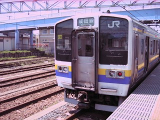 前々から銚子電鉄(銚子電気鉄道)に乗りたいと思っていたのだがゴールデンウィークは混むからやめておこう、と考えた。んが、それではいつになったら行けるのか全然予定がたちそうにないので、勢い大事ということで出発する。行きはのんびり普通列車で、銚子までJR総武線を……なんと千葉から成東経由で2時間半! 遠すぎだよ、時間かかりすぎだよ。たしかに東京から120km、千葉から80kmだから遠いのは間違っていないんだががが。
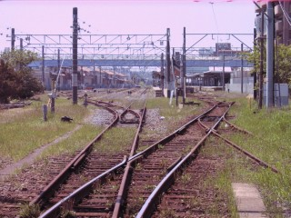 全然関係ないけど、千葉駅の電光掲示板に「NEXの通過」の文字列を発見。いまは、そんな表示もあるんだねぇ。銚子駅前で昼飯を食っていたら電車が行ってしまったので、銚子電鉄の本社がある仲ノ町駅まで歩いてみる。写真は、途中の踏切から見た銚子駅。銚子電鉄は、右側の線路から発着する。
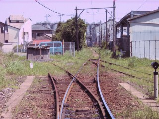 銚子駅方面から仲ノ町駅方面を見ると、こんな感じ。左への分岐は安全側線。一番遠くに見えるタンクみたいなのは、ヤマサしょうゆの工場と思われる。
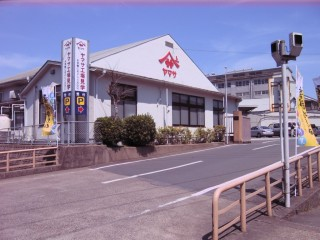 道を進むと、藤棚のきれいな妙福寺というお寺がある。その先には、ヤマサしょうゆの工場がある。ちなみに、銚子駅をはさんだ反対側の西側にはヒゲ田しょうゆがある。
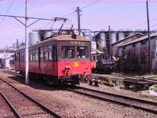 仲ノ町車庫に停車する、デハ701。この車両は、近江鉄道で使用されていたものとのこと。右手前には、デキ3が停車している。仲ノ町駅の銚子電鉄本社を見つけた(知った?)ときの私の驚きは、みなさんにも体験して欲しい。
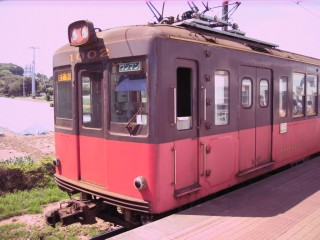 仲ノ町で一日乗車券を購入し、犬吠まで乗車。写真のデハ1002は、銀座線で使用されていたものとのこと。デハ701と比べると、色々違う点がわかる。
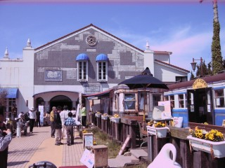 犬吠駅は、ご覧の通りのきれいな駅舎。関東の駅百選にも認定されたとのこと。「ぬれ煎餅」も「でんでん酒」も、ここで買える。
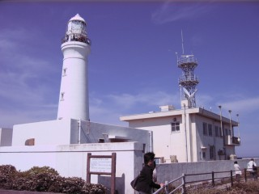 せっかくなので、犬吠埼灯台へ。犬吠駅からは、歩いて10分程度の距離しかない。
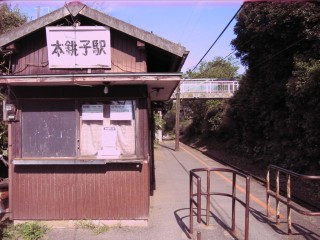 終点の外川まで乗って折り返し、本銚子で降りてみる。「もとちょうし」と読むのだが、「本調子(ほんちょうし)」とかけて受験生がお守り代わりに切符を買うのだという。ここは無人駅。
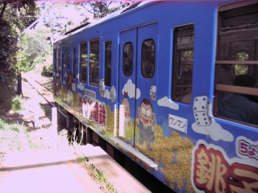 本銚子を発車する、桃太郎電鉄のカラーリングをしたデハ1001。
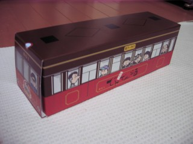 本銚子で降りたのは、「でんでん酒」を製造している石上酒造へ行くため。「浮玉」を買いたかったのだが、残念ながら終売(販売終了)とのこと。大吟醸か本醸造のどちらを買うが、あまりにおいしくてどっちを買ったのか忘れた(んざそら)。「でんでん酒」は電車の形を模した、こんな箱に入って売られている。
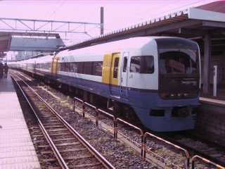 朝早く家を出たためか、夕方にはくたばりかける。いい時間に「しおさい」がやってきていたので、当然(?)自由席で乗ってみる。あっという間に眠りに落ちて、気がついたら東京駅だった。